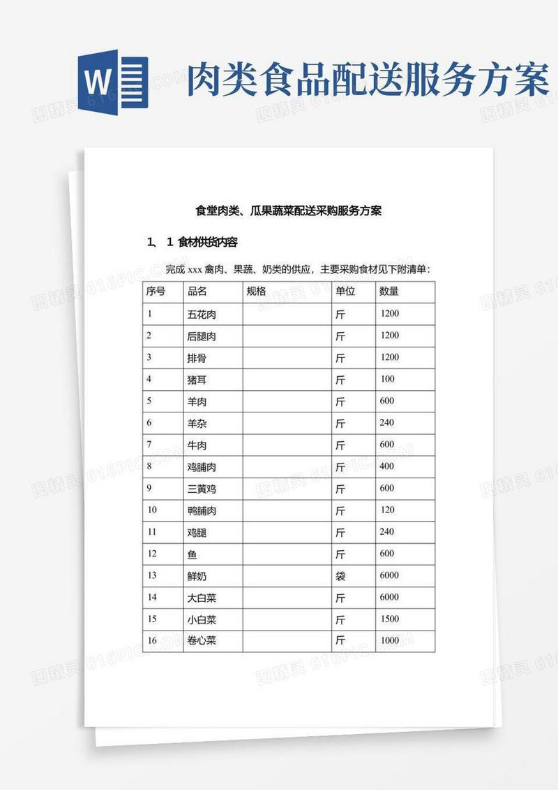

生鲜录单常是微信里的文字、截图、Excel，格式乱、强度大。上传订单图片 / PDF / Excel / 文本 → 自动识别商品、数量、价格、备注，结构化输出。规则引擎处理方言别名（“番茄→西红柿”）。

演示输入：食堂肉类、瓜果蔬菜配送采购清单（含品名 / 规格 / 单位 / 数量的表格）。
系统会对这类图片走 图片 OCR 节点 → PaddleOCR 提取文字 → 规则检索归一化品名 → Qwen 抽取为结构化条目（如 五花肉 · 斤 · 1200）。
此为演示数据 / Demo Data，用于说明识别链路，非真实经营数据。
LangGraph 有向图工作流，条件路由 + 节点化处理
PaddleOCR（图片/PDF）+ pandas（Excel）+ Qwen（理解抽取）
FastAPI REST，四类输入端点 + 健康检查 + 日志
Streamlit 交互界面；Docker Compose 双容器
$ docker compose up → API http://localhost:8000 → Streamlit UI http://localhost:8501
本项目为可运行的全栈应用，未部署公网；以上为本地启动方式，面试可现场演示或看录屏。